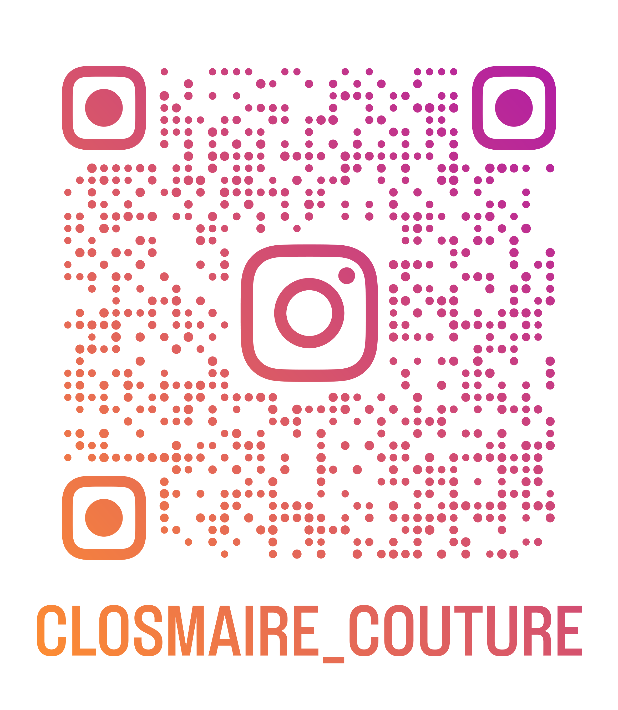

Club Couture du Lycée Clos Maire
Envie de changer de trousse ? De personnaliser ton blouson ? De réaliser une robe sur mesure ? D'offrir un cadeau unique à un proche ? De réparer une fermeture Éclair, faire un ourlet à un jean ou redimensionner un pull trop grand ?
Le club Couture, c’est un endroit convivial où on peut discuter, échanger, parfois pique-niquer, tout en apprenant à cultiver notre créativité ! Qu’on soit débutant ou pas, tout le monde est le bienvenu !
Nous disposons de beaucoup de matériel : deux machines faciles à employer, toute la mercerie nécessaire (fil, aiguilles, papier à patrons, etc.) et de nombreux tissus.
Nos Activités
- Création sur mesure : trousses, robes, sacs, peluches, capes réversibles, etc...
- DIY et customisation : moderniser ou transformer ses vêtements !
- Retouches : ourlets, boutons, fermetures éclairs, etc.
- Événements : spectacle de fin d'année, concours de pulls de Noël, etc.
Nos événements récents
Le club participe à de nombreux projets : collecte solidaire, spectacle de fin d’année, concours de pull de Noël...
Suivez-nous !
Notre compte Instagram :
